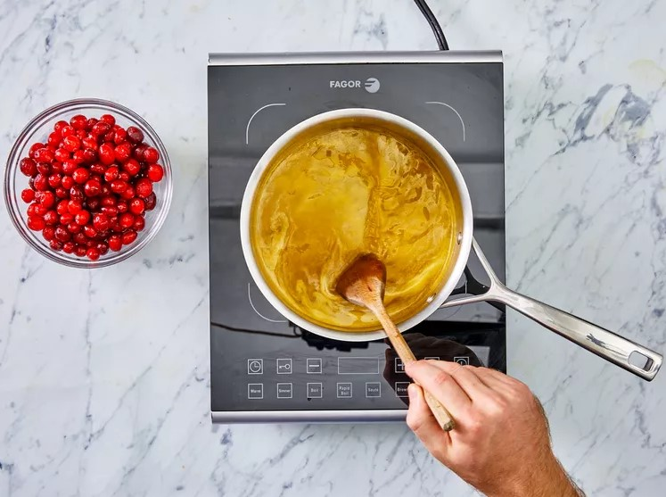

Cranberry Sauce!!
How to Make Cranberry Sauce
It couldn't be easier to make this 3-ingredient cranberry sauce. You'll find the full recipe below, but here's a brief overview of what you can expect:
Heat orange juice in a saucepan. Stir in sugar and cook until it dissolves. Add cranberries and continue cooking, stirring often, until they start to pop. Remove the sauce from heat and transfer it to a bowl – the cranberry sauce will continue to thicken as it cools.
Ingredients
- 12 ounces cranberries
- 1 cup white sugar
- 1 cup orange juice
Direction
Step 1
Gather all ingredients.
Step 2
Dissolve sugar in the orange juice in a medium saucepan over medium heat.

Step 3
Stir in the cranberries and cook until they start to pop, about 10 minutes.
Step 4
Remove from heat and place sauce in a bowl. It will thicken as it cools.
Step 5
!!Enjoy!!